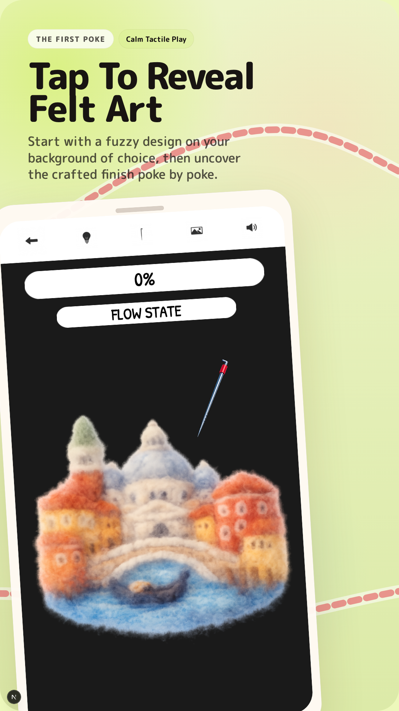
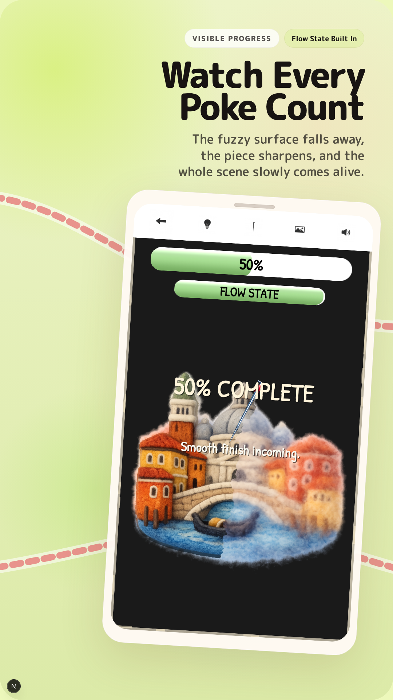
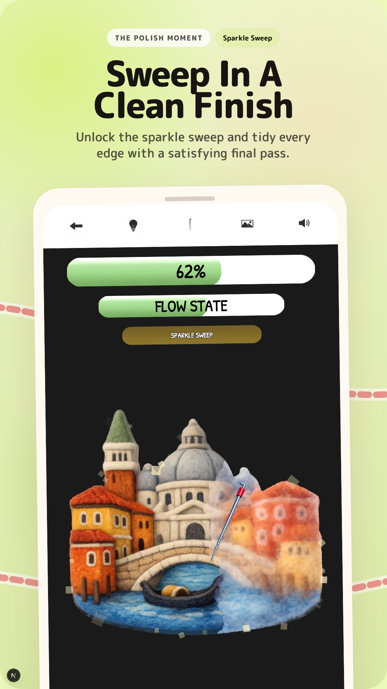
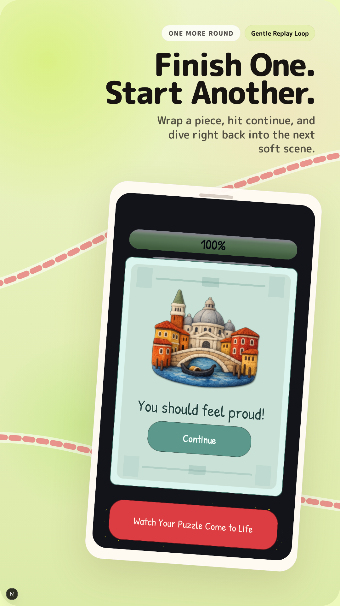

Zen Poke is live. You can download it right now, for free, on the App Store.

What Is Zen Poke
Zen Poke is a calm, satisfying felt reveal game built for portrait play. Poke fluffy felt art and watch cozy handmade scenes come to life. Slowly uncover finished handmade scenes, one soft reveal at a time.
From animals and flowers to food, fantasy, travel, and nature scenes, each puzzle is designed for players seeking a soothing game they can pick up anytime and enjoy at their own pace.





What's In The Game
- Satisfying fluffy-to-finished felt reveals
- Calm touch-first portrait gameplay
- Daily Puzzle sessions, stars, streaks, and level progression
- Replay and share after completion
- Cozy cosmetic unlocks as you play
- Offline-first core gameplay
The game is free with an optional one-time purchase to remove ads.
Download
Zen Poke is available now on the App Store for iPhone and iPad.

You can also visit the Zen Poke app page, support, or privacy policy on this site.